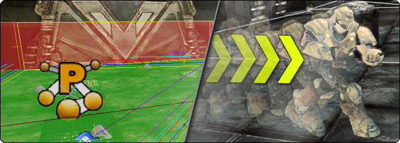
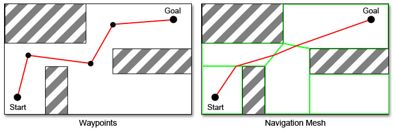

UDN
Search public documentation:
AIAndNavigationHomeCH
English Translation
日本語訳
한국어
Interested in the Unreal Engine?
Visit the Unreal Technology site.
Looking for jobs and company info?
Check out the Epic games site.
Questions about support via UDN?
Contact the UDN Staff
日本語訳
한국어
Interested in the Unreal Engine?
Visit the Unreal Technology site.
Looking for jobs and company info?
Check out the Epic games site.
Questions about support via UDN?
Contact the UDN Staff
UE3 主页 > AI & 导航
AI & 导航


- 导航网格物体参考指南 - 关于导航网格物体的概述和参考指南。
- 导航网格物体技术指南 - 将导航网格物体和由AI控制的NPC结合使用。
- 导航网格物体目标和求值器 - 使用导航网格物体寻路。
- 导航网格物体调试 - 导航网格物体路径调试。
- 路径节点技术指南 - 使用UnrealScript编写游戏性元素。
- 创建动态障碍物 - 给导航网格物体添加障碍物，以便AI可以绕过它。